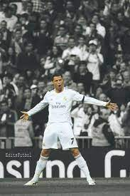
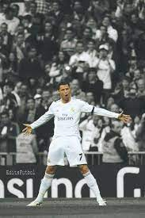

Cristiano Ronaldo dos Santos Aveiro GOIH ComM (Portuguese pronunciation: [kɾiʃˈtjɐnu ʁɔˈnaldu]; born 5 February 1985) is a Portuguese professional footballer who plays as a forward for and captains both Saudi Professional League club Al Nassr and the Portugal national team. Widely regarded as one of the greatest players of all time, Ronaldo has won five Ballon d'Or awards[note 3] and four European Golden Shoes, the most by a European player. He has won 32 trophies in his career, including seven league titles, five UEFA Champions Leagues, the UEFA European Championship and the UEFA Nations League. Ronaldo holds the records for most appearances (183), goals (140) and assists (42) in the Champions League, goals in the European Championship (14), international goals (123) and international appearances (200). He is one of the few players to have made over 1,100 professional career appearances, and has scored over 800 official senior career goals for club and country, making him the highest goalscorer of all time. Ronaldo began his senior career with Sporting CP, before signing with Manchester United in 2003, winning the FA Cup in his first season. He would also go on to win three consecutive Premier League titles, the Champions League and the FIFA Club World Cup; at age 23, he won his first Ballon d'Or. Ronaldo was the subject of the then-most expensive association football transfer when he signed for Real Madrid in 2009 in a transfer worth €94 million (£80 million). He became a key contributor and formed an attacking trio with Karim Benzema and Gareth Bale which was integral to the team winning four Champions League wins from 2014 to 2018, including La Décima. During this period, he won back-to-back Ballons d'Or in 2013 and 2014, and again in 2016 and 2017, and was runner-up three times behind Lionel Messi, his perceived career rival. He also became the club's all-time top goalscorer and the all-time top scorer in the Champions League, and finished as the competition's top scorer for six consecutive seasons between 2012 and 2018. With Real, Ronaldo won four Champions Leagues, two La Liga titles, two Copas del Rey, three UEFA Super Cups and three Club World Cups. In 2018, he signed for Juventus in a transfer worth an initial €100 million (£88 million), the most expensive transfer for an Italian club and for a player over 30 years old. He won two Serie A titles, two Supercoppa Italiana trophies and a Coppa Italia, became the inaugural Serie A Most Valuable Player and became the first footballer to finish as top scorer in the English, Spanish and Italian leagues. He returned to Manchester United in 2021, finishing his only full season as the club's top scorer, before his contract was terminated in 2022. In 2023, he signed for Al Nassr. Ronaldo made his international debut for Portugal in 2003 at the age of 18 and has since earned 200 caps, making him Portugal's most-capped player. With more than 100 goals at international level, he is also the all-time top goalscorer. Ronaldo has played in and scored at eleven major tournaments; he scored his first international goal at Euro 2004, where he helped Portugal reach the final. He assumed captaincy of the national team in July 2008. In 2015, Ronaldo was named the best Portuguese player of all time by the Portuguese Football Federation. The following year, he led Portugal to their first major tournament title at Euro 2016, and received the Silver Boot as the second-highest goalscorer of the tournament. This achievement would see him receive his fourth Ballon d'Or. He also led them to victory in the inaugural UEFA Nations League in 2019, receiving the top scorer award in the finals, and later received the Golden Boot as top scorer of Euro 2020. One of the world's most marketable and famous athletes, Ronaldo was ranked the world's highest-paid athlete by Forbes in 2016 and 2017 and the world's most famous athlete by ESPN from 2016 to 2019. Time included him on their list of the 100 most influential people in the world in 2014. He is the first footballer and the third sportsman to earn US$1 billion in his career. Early life Cristiano Ronaldo dos Santos Aveiro was born on 5 February 1985 in the São Pedro parish of Funchal, the capital of the Portuguese island of Madeira, and grew up in the nearby parish of Santo António.[8][9] He is the fourth and youngest child of Maria Dolores dos Santos Viveiros da Aveiro, a cook, and José Dinis Aveiro, a municipal gardener and part-time kit man.[10] His great-grandmother on his father's side, Isabel da Piedade, was from the island of São Vicente, Cape Verde.[11] He has one older brother, Hugo, and two older sisters, Elma and Liliana Cátia "Katia".[12] He was named after actor and U.S. President Ronald Reagan, whom his father was a fan of.[13] His mother revealed that she wanted to abort him due to poverty, his father's alcoholism, and having too many children already, but her doctor refused to perform the procedure,[14][15] as abortions were illegal in Portugal at that time.[16] Ronaldo grew up in an impoverished Catholic Christian home, sharing a room with all his siblings.[17] As a child, Ronaldo played for Andorinha from 1992 to 1995,[18] where his father was the kit man,[10] and later spent two years with Nacional. In 1997, aged 12, he went on a three-day trial with Sporting CP, who signed him for a fee of £1,500.[19] He subsequently moved from Madeira to Alcochete, near Lisbon, to join Sporting's youth academy.[19] By age 14, Ronaldo believed he had the ability to play semi-professionally and agreed with his mother to cease his education to focus entirely on football.[20] With a troubled life as a student[21] and living in Lisbon area away from his Madeiran family, he did not complete schooling beyond the 6th grade.[22][23] While popular with other students at school, he had been expelled after throwing a chair at his teacher, who he said had "disrespected" him.[20] One year later, he was diagnosed with tachycardia, a condition that could have forced him to give up playing football.[24] Ronaldo underwent heart surgery where a laser was used to cauterise multiple cardiac pathways into one, altering his resting heart rate.[25] He was discharged from the hospital hours after the procedure and resumed training a few days later.[26] Club career Sporting CP Ronaldo memorabilia at Sporting CP's museum At age 16, Ronaldo was promoted from Sporting's youth team by first-team manager László Bölöni, who was impressed with his dribbling.[27] He subsequently became the first player to play for the club's under-16, under-17 and under-18 teams, the B team and the first team, all within a single season.[19] A year later, on 29 September 2002, Ronaldo made his debut in the Primeira Liga, against Braga and on 7 October, he scored two goals against Moreirense in their 3–0 win.[28] Over the course of the 2002–03 season, his representatives suggested the player to Liverpool manager Gérard Houllier and Barcelona president Joan Laporta.[29] Manager Arsène Wenger, who was interested in signing Ronaldo, met with him at Arsenal's stadium in November to discuss a possible transfer.[30] Manchester United manager Alex Ferguson was determined to acquire Ronaldo on a permanent move urgently, after Sporting defeated United 3–1 at the inauguration of the Estádio José Alvalade in August 2003. Initially, United had planned to sign Ronaldo and loan him back to Sporting for a year.[31] Having been impressed by him, the United players urged Ferguson to sign him. After the game, Ferguson agreed to pay Sporting £12.24 million[31] for what he considered to be "one of the most exciting young players" he had ever seen.[32] A decade after his departure from the club, in April 2013, Sporting honoured Ronaldo by selecting him to become their 100,000th member.[33] Manchester United 2003–2007

 
